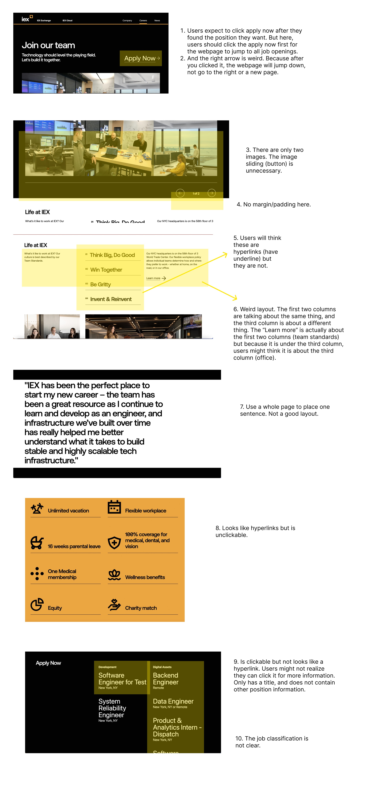
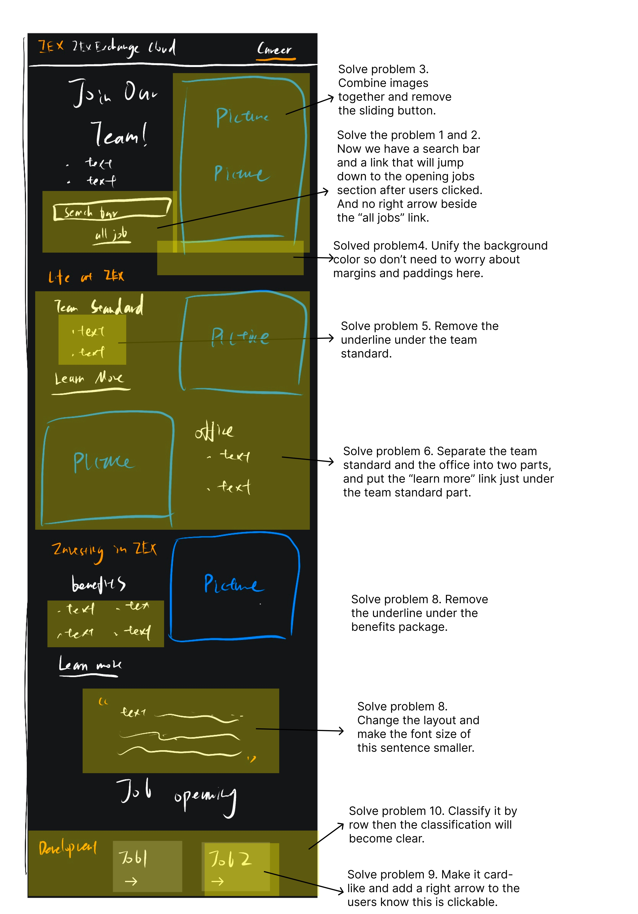
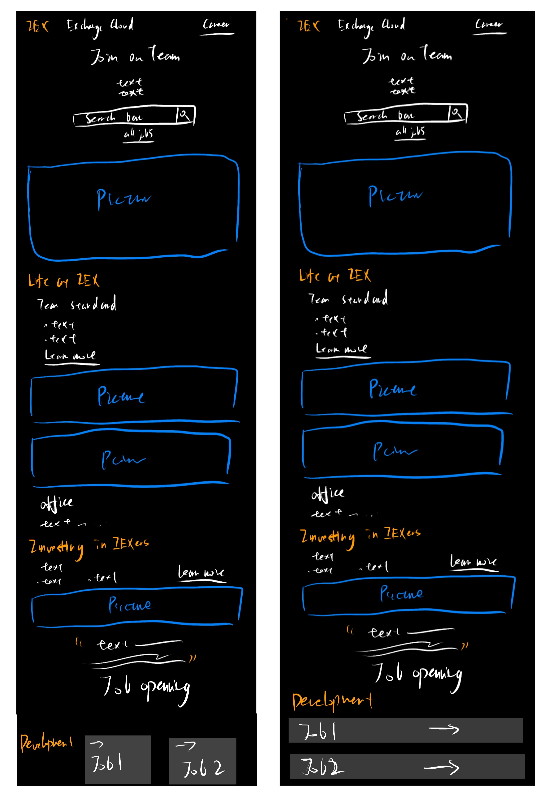

Redesign
This project is about redesign the IEX career page.
Original Webpage
IEX original career pageRedesign Webpage
IEX redesign career pageThe reason I choose this page is that I was looking for an internship recently, and I found some of the companies’ career pages were not well designed, so I want to redesign one of them, and make it better (hopefully :) ).
Problems
I found several problems in the original webpage and want to focus on them during the redesign.
Accessibility
After using the WebAIM WAVE, I also detected some possible accessibility problems
There are 6 errors. 2 errors are missing alternative text for pictures so nothing will show up in the image position when images are not successfully loaded. 1 error is the language of the HTML document is missing then some search engines cannot identify which language this document is using. 1 error is the empty heading, maybe the webpage developer just wants to use the title tag to create an empty space. 2 errors are the empty button, the webpage developer didn’t put any value text in the button but used another way to label it and implemented its functionality.
Through these errors, we can see the webpage is not developed under a good, standard specification. Although maybe everything works as the developer expects now, this webpage still has hidden design problems. I agree with these problems. I don’t think these are big problems, since this is just a career page of a small company, those problems won’t impact the usability. However, these problems may impact visitors’ impression of this company.
Low-fidelity Wireframing
I create three lo-fi wireframes for the webpage redesign.
For desktop (and explaination about problems solving)
For tablet and mobile. (Left tablet Right mobile)
Actually, all problems are solved in the same way here as above desktop wireframe. So didn't make additional annotation here.
Visual Design Style Guide
I made a Visual Design Style Guide for the webpage redesign.

High-Fidelity Prototyping
These are three hi-fi prototypes. For clarity, all notations and explanations are included in the first prototypes (desktop screen size)
Hifi pro desktop screenHifi pro tablet screen
Hifi pro mobile screen